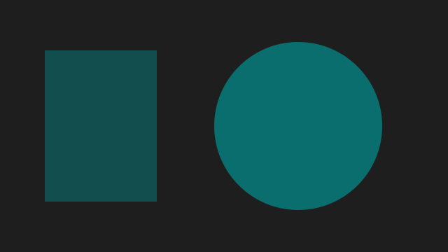

<link rel="stylesheet" href="./specimen/examples.css" />
<section class="cap-specimen" aria-labelledby="s-placeholder">
  <h2 id="s-placeholder">The stored placeholder while the image loads, and the image once it has</h2>
  <p class="cap-muted">The first stands in for an image still on its way: its pixels are not here, so the stored tiny picture shows, drawn at the box's size and smoothed into a blur over the stored main color. The box is the image's own size from the start, so nothing moves when the pixels arrive.</p>
  <div class="picture-sample-row">
    <figure id="pic-loading"><figcaption>Loading: the placeholder</figcaption></figure>
    <figure id="pic-loaded"><figcaption>Loaded: the image paints over it</figcaption></figure>
    <figure id="pic-color"><figcaption>A file with only its main color</figcaption></figure>
  </div>
</section>

<section class="cap-specimen" aria-labelledby="s-motion">
  <h2 id="s-motion">An animated image with its pause control, playing and paused</h2>
  <p class="cap-muted">Pause is a checkbox, so it works with no script. While it is checked the still shows in place of the moving picture; with the system set to reduce motion the still shows and the control is not needed.</p>
  <div class="picture-sample-row">
    <figure id="motion-playing">
      <span class="cap-motion">
        <picture><source type="image/svg+xml" srcset="./specimen/still.svg" media="(prefers-reduced-motion: reduce)"></picture>
        
        <label class="cap-motion-toggle"><input type="checkbox" class="cap-motion-pause"> Pause</label>
      </span>
      <figcaption>Playing</figcaption>
    </figure>
    <figure id="motion-paused">
      <span class="cap-motion">
        <picture><source type="image/svg+xml" srcset="./specimen/still.svg" media="(prefers-reduced-motion: reduce)"></picture>
        
        <label class="cap-motion-toggle"><input type="checkbox" class="cap-motion-pause" checked> Pause</label>
      </span>
      <figcaption>Paused</figcaption>
    </figure>
  </div>
</section>
